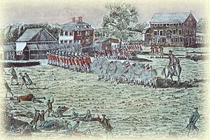

| 7th July, 1781 Made the acquaintance of the enemy at Green Springs Farm, near Jamestown, yesterday. We waded across a shallow swamp to attack them at the rear and menaced them with rifle fire, which they repaid with a very heavy bombarding of grapeshot. We engaged them for two hours, but they were moving into our line of retreat. Then, to our astonishment, for we were greatly outnumbered, we were ordered to charge with our bayonets. The British advance was turned back, and we retreated very rapidly to the farm.  |